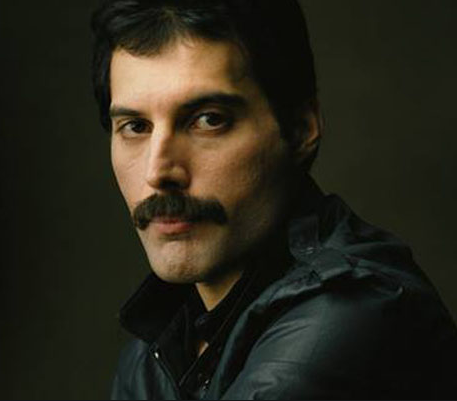
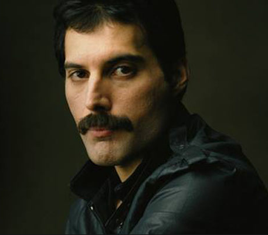
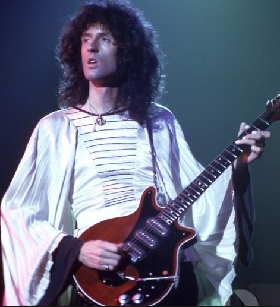
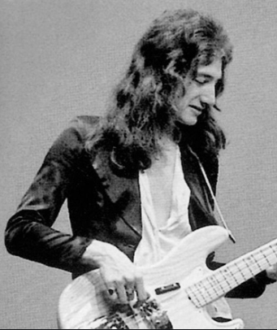
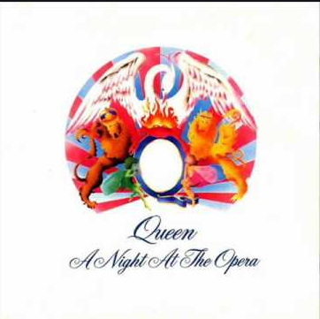
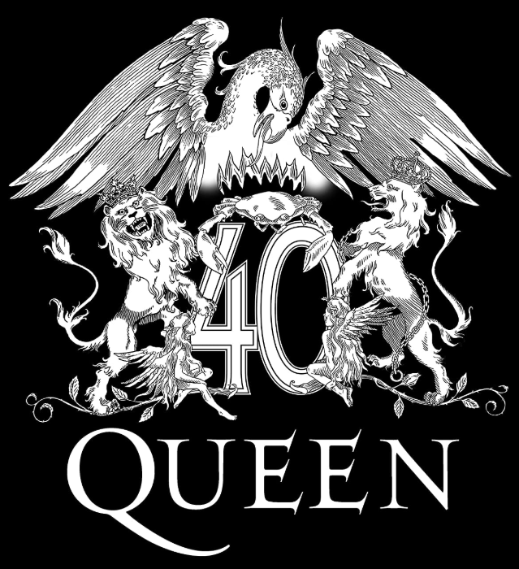

Freddie Mercury
Vocals and Piano
We love music
Queen is a rock band currently led by Brian May (guitar), Roger Taylor (drums) and John Deacon (bass). It was one of the most popular English bands of the 1970s and 1980s, being a forerunner of rock as we know it today, with magnificent productions of his concerts and music videos of his songs. Even though she was never taken seriously by critics of her time, who considered her music "commercial" (today's critics consider the Queen to be one of the best rock bands of all time), the band has become the most Famous among the public, thanks to its unique blend of complex and elaborate live performances and the dynamism and charisma of its biggest star, lead singer Freddie Mercury. The beginning of the band goes back to 1967, when Brian May, Tim Staffell and Roger Taylor formed the trio Smile, in Imperial College in London, where all studied. After the departure of bassist and vocalist Tim Staffell in the spring of 1970, May and Taylor were introduced by Staffell to Farrokh Bulsara in April of that same year, who was to be the lead singer of the new band with the stage name Freddie Mercury,Baptizing the band with the name Queen. In 1971, John Deacon completed the formation of the Queen as a bass player.
Freddie Mercury
Vocals and Piano
Brian May
Guitar and Vocals
John Deacon
Bass
Roger Taylor
Drums and Vocals
Bohemian Rhapsody
Digital Remester
Queen 40 years.
